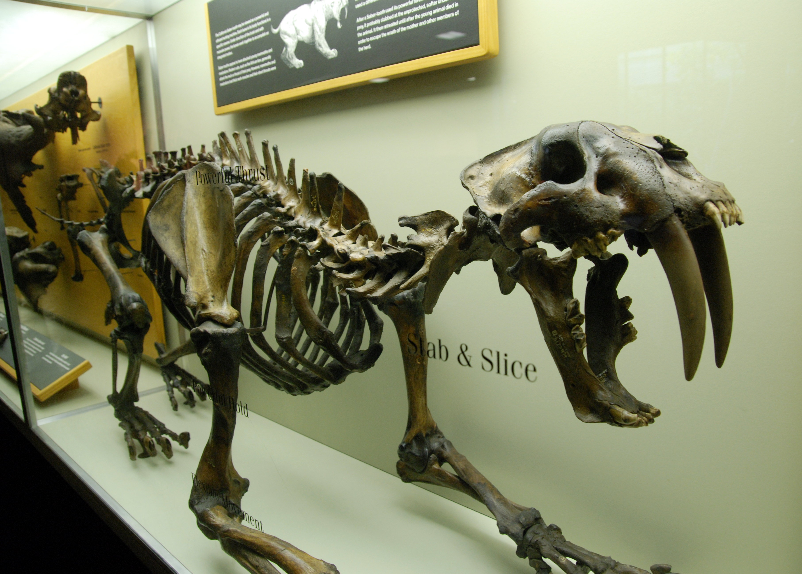

🦅 Resum Ràpid
🌍 Sud-amèrica: L'Illa dels Monstres Plomats
L'aïllament geogràfic d'Amèrica del Sud durant milions d'anys va permetre que aquestes aus ocupessin el nínxol de superdepredador que en altres continents tenien els grans felins o els cànids.
Dominis de Sabana: En les vastes planes obertes del Cenozoic, aquestes aus eren les amfitriones de la mort. A diferència del Thylacoleo, la seva estratègia no era l'emboscada, sinó la persecució pura i la velocitat punta en terrenys clars.
El Kelenken: Dins d'aquesta família destaca el Kelenken guillermoi. Amb un crani de 71 cm (el més gran mai trobat en una au), era l'equivalent a un tiranosaure amb plomes de 3 metres d'alçada que dominava les pampes amb una autoritat absoluta.
Cronologia: Van regnar des de fa uns 62 milions d'anys fins fa només 100.000 anys, essent un dels llinatges de depredadors més exitosos de la història de la Terra.
💀 Anatomia d'un "Cop de Destral"
El que feia realment terrorífiques aquestes aus no era només la seva mida, sinó l'enginyeria letal del seu crani i la seva oïda:
El Bec-Destral: A diferència de la majoria d'aus, que tenen cranis flexibles, el de les Aus del Terror era un bloc d'os massís i rígid. No mossegaven com un felí; picaven amb un moviment vertical descendent. Un cop amb la punta del bec ganxo podia perforar un crani o trencar la columna instantàniament.
Oïda de Baixa Freqüència: Les investigacions revelen que eren sensibles a sons molt greus. Podien sentir les vibracions del terra causades per preses llunyanes o emetre rugits infrasònics que feien vibrar el pit dels seus oponents.
Urpes a les Ales: Les seves ales vestigials no servien per volar, però podrien haver tingut petites urpes o, més probablement, servien com a timons aerodinàmics per no perdre l'equilibri en girs bruscos a alta velocitat.
🥊 Tècnica de Caça: Impacte i Retirada
A diferència dels mamífers que solen asfixiar la presa, elles feien servir una tècnica de "boxa" mortal:
1. Persecució: Atrapaven la presa gràcies a la seva velocitat superior en camp obert.
2. Atac de Precisió: Llançaven cops ràpids i verticals amb el bec, actuant com martells pneumàtics sobre els punts vitals.
3. Englotir: Un cop la presa estava atordida o morta, feien servir el bec ganxo per esquinçar carn o, si la presa era petita, englotir-la sencera d'un sol cop.
🏺 El Mamífer que era un Ocell
La història de les Aus del Terror està plena de sorpreses que van desconcertar els millors científics del segle XIX.
L'Error d'Ameghino (1887): Quan Florentino Ameghino va trobar els primers fragments de Phorusrhacos, eren tan massissos que va pensar que eren les restes d'un mamífer desdentat gegant. No va ser fins més tard que es va adonar que estava davant d'un ocell que havia trencat totes les regles de la mida.
El "Monstre" de la Patagònia: El 1999, Guillermo Aguirre-Zabala va descobrir el crani del Kelenken. Amb 71 centímetres de llargada, aquesta peça va confirmar que tenien un cap massís capaç de generar una força d'impacte sense comparació en el món aviari.
🧬 L'Enllaç Evolutiu: El "Terror" en Miniatura
Si vols veure com es movia una Au del Terror, només cal que observis el seu parent viu més proper: La Seriema (Cariama cristata).
Aquest ocell de les planes de Sud-amèrica manté l'essència dels seus avantpassats gegants en un cos de 90 cm:
- Caminants nates: Igual que els seus ancestres, prefereix córrer a gran velocitat que volar.
- Depredadores implacables: Cacen serps i petits mamífers amb una eficàcia absoluta.
- Tècnica Brutal: La Seriema agafa la presa i la colpeja violentament contra el terra per trencar-li els ossos. És un eco, a petita escala, de les massacres que el Kelenken protagonitzava fa milions d'anys.
🥊 Duel Paleontològic: El Gran Intercanvi Americà

El Smilodon (tigre de dents de sabre), el depredador que va desafiar el regnat de les aus.
Fa uns 3 milions d'anys, la formació de l'Istme de Panamà va sentenciar el destí de les Aus del Terror en un esdeveniment que va canviar el planeta per sempre.
El Xoc de dos Mons: El "Gran Intercanvi Biòtic Americà" va posar cara a cara les aus gegants amb els carnívors del nord. L'arribada del Smilodon i els primers cànids va canviar les regles. Mentre les aus eren caçadores solitàries de potència bruta, els nous depredadors sovint caçaven en grup o tenien estratègies socials difícils de contrarestar.
L'Últim Conqueridor (Titanis): Tot i la pressió, les aus no es van rendir. El Titanis walleri va ser l'excepció heroica: va fer el camí invers i va colonitzar Amèrica del Nord (Texas i Florida), sent l'única de la seva estirp que va competir amb èxit fins fa 1,8 milions d'anys.
🎬 Cultura Popular i Mites: Entre la Realitat i la Ficció
Escena de la pel·lícula "10.000 a.C." on apareixen les Aus del Terror.
L'aspecte visual de les Aus del Terror és tan potent que el cinema no ha pogut resistir-se a utilitzar-les, encara que no sempre amb total precisió científica.
L'Escena de "10.000 a.C.": En aquesta pel·lícula, les aus apareixen en una selva tancada, caçant com si fossin raptors. Tot i que la seva mida és encertada, l'entorn no ho és: eren corredores de planes obertes, no de selves denses on el seu bec massís i la seva velocitat s'haurien vist compromesos.
El Mite del Bec (La Destral vs. Les Estripes): Estudis biomecànics moderns sobre l'espècie Andalgalornis han demostrat que el seu crani era massa rígid per a moviments laterals. La seva tècnica real era la del "cop de destral": un atac vertical fulminant i precís.
💡 Sabies que...?
Tragant-se el sopar d'un sol cop: Els paleontòlegs creuen que el mètode d'alimentació variava segons la mida. Les espècies més petites, com el Psilopterus, eren "aspiradores" de carn: podien empassar-se preses senceres de la mida d'un conill gràcies a l'amplada de la seva gola. En canvi, gegants com el Kelenken havien de trossejar la presa amb el bec i les potes abans de menjar.
La puntada de peu letal: No tot era el bec. Les seves potes tenien una potència superior a la d'un estruç modern. Una sola puntada de peu ben dirigida podia fracturar costelles o trencar la columna d'un mamífer mitjà a l'acte. Era l'arma perfecta tant per caçar com per mantenir a distància altres depredadors.
Extinció: El seu regnat va acabar amb el Gran Intercanvi Biòtic Americà. La competència amb els nous carnívors del nord (com els cànids i felins socials) i els canvis climàtics van fer que aquests titans plomats desapareguessin fa uns 100.000 anys.
📚 REFERÈNCIES BIBLIOGRÀFIQUES
- Ameghino, F. (1887). Enumeración sistemática de las especies de mamíferos fósiles coleccionados por Carlos Ameghino en las tierras terciarias de la Patagonia.
- Degrange, F. J. et al. (2010). Mechanical analysis of feeding behavior in the extinct “terror bird” Andalgalornis steulleti. PLoS ONE.
- Alvarenga, H. M. & Höfling, E. (2003). Systematic revision of the Phorusrhacidae (Aves: Ralliformes). Papéis Avulsos de Zoologia.
- Bertelli, S. et al. (2007). A new phorusrhacid (Aves: Cariamae) from the Middle Miocene of Patagonia, Argentina. Journal of Vertebrate Paleontology.